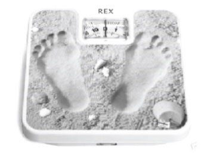
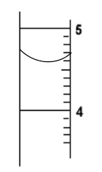
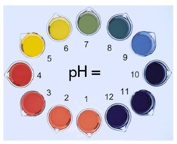
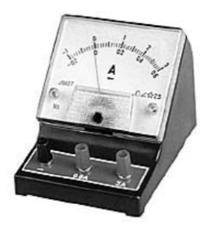
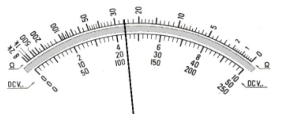
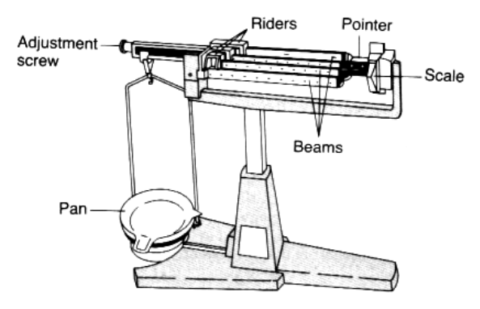
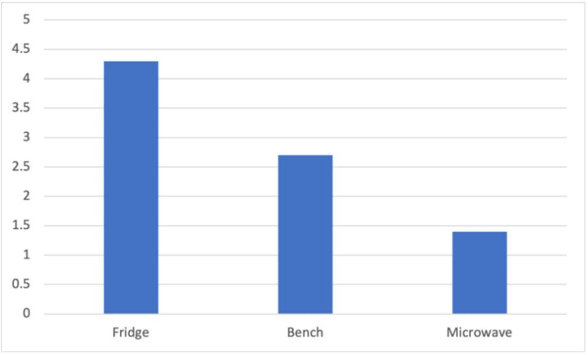

Evaluation
The "evaluating" stage involves discussing the investigation itself: judging the strength of the conclusion, judging the impact of errors, and considering whether the results could be explained by different scientific theory.
Errors
Whenever we observe and measure, there are limitations on the equipment and method, so there are errors. These aren't necessarily mistakes, but uncertainties that we must account for.
| Type of error | Examples | Steps to reduce it |
|---|---|---|
| Random: irregular errors, which may be above or below the true value | Fluctuations in temperature; tremors caused by draughts; the senses being unable to detect a change; unpredictable movement of equipment; reaction time | A stable setup to ensure reproducibility; repeated trials to identify outliers; averaging repeated trials |
| Systematic: consistent errors due to equipment or experimental design | A scale or container calibrated for one temperature used at a different temperature; a zero error (e.g. a scale reading 1.5 kg with nothing on it); an instrument malfunction that gives a consistent error | Can be reversed if clearly identified (e.g. subtract a known zero error); check equipment before use; calibrate equipment to a standard |
A table summarising errors and suggested improvements is a good way to communicate your error analysis:
| Error or limitation | Evaluation of error/limitation | Suggested improvement |
|---|---|---|
| What aspect of the method needs to be improved? | How could it affect your results? Is it likely to have a big impact? (high/moderate/low, with a reason) | A change to the method that could fix the error |
| Example: Room temperature was not controlled during the experiment. | Higher temperatures can increase the speed of the reaction, as particles move and collide with more energy. But the room temperature didn't change much, and it only matters for the short time after the solutions leave the water bath, so it had minimal impact on the results. | Record the room temperature and check it stays the same for all trials. |
Match each error with its type.
Strength of the conclusion
The conclusion itself must be evaluated. It is easy to state a conclusion, but harder to judge how strong it is. Base your judgement on how clear the relationship in the graph is, how well the results agree with other scientific research, and how well-designed the experiment was. Considering the errors and limitations, how confident are you in your conclusion?
Alternative explanations
Some results can be explained in more than one way, using different scientific theories. If there is an alternative explanation for your results, discuss which explanation is most likely.
Activity: measurement errors prac
Measurement is an essential skill in science. A measurement usually has three parts:
- a number read off an instrument
- a unit for that measurement
- a statement of the measurement's precision (studied further in Year 11).
In this prac you will move between stations, getting familiar with different equipment and the type and size of errors involved. Discuss the questions at each station, then complete a DEEDS quiz to confirm your understanding.
Station 1: bathroom scales

- What is the unit of the measurement? c. State the precision of the scale. d. Scales can become poorly calibrated and not start from zero. What type of error is this? e. Would a zero error affect accuracy, precision or both? Explain.
- Kilograms (kg).
- To the smallest division on the dial, e.g. 0.1 kg (check your scale).
- A systematic error (a zero error).
- It affects accuracy, because every reading will be shifted away from the true value. It doesn't affect precision, because the readings are still just as close to each other.
Station 2: measuring volume with a burette
Pour 50 mL of water into a beaker using the scale on the side. Pour it all into the burette and measure the volume. Remember to read from the bottom of the meniscus.

- The burette scale appears upside down, with zero at the top. Why? c. State the precision of the burette. d. What type of errors are common when reading a burette, and how can they be overcome?
- A burette measures how much liquid has been let out (added to the flask below). Starting at 0 at the top, the reading at the end directly shows the volume delivered.
- 0.1 mL.
- Parallax error (reading the scale from above or below eye level), which is systematic if you always stand in the same position. Overcome it by reading at eye level with the bottom of the meniscus.
Station 3: acidity
Test three solutions (ammonia solution, calcium hydroxide and hydrochloric acid) with:
- Litmus paper: turns red in acid and blue in base.
- Universal indicator: shows a range of pH colours. Fairly precise, though not as precise as a pH meter, and easy to use without expensive equipment.
Acids have a pH below 7 and bases have a pH above 7. Strong acids have a low pH and strong bases have a high pH. (When finished, pour all chemicals down the sink and rinse the test tubes.)

Is each method qualitative (what is present), quantitative (how much is present) or semi-quantitative (an approximate reading)?
Litmus paper:
Universal indicator:
pH meter:
Station 4: electric circuit meters
Measure the current with the ammeter. There are two scales (1 A and 5 A), and the red connection shows the maximum current. Using that scale, read the actual current. The same applies to the voltmeter.

- What is the most common error with the ammeter and voltmeter? c. What is the precision of the ammeter on the 1 A scale? d. What is the precision of the voltmeter on the 3 V scale? e. What is the mirrored surface behind the needle for? f. What is this type of error called? g. Where should your eye be when reading a scale to avoid it?
- Parallax error: reading the needle from an angle (systematic if you always stand in the same position).
- 0.1 A (check the smallest division on your meter).
- 0.1 V.
- It helps you avoid parallax error: line up the needle with its reflection in the mirror.
- Parallax error.
- Directly in front of the needle, so the needle hides its own reflection (eye perpendicular to the scale).
Read the scale shown and record the voltage if the instrument is connected to each range. Answers within 5% are accepted.

- 10 V scale: V
ii. 50 V scale: V
iii. 250 V scale: V
The needle is just past the "4 / 20 / 100" mark. On the 10 V scale that is about 4.4 V, on the 50 V scale about 22 V, and on the 250 V scale about 110 V.
Station 5: mass with the triple-arm balance
The triple-arm balance is a precise laboratory instrument if used correctly. Use it flat on a bench and set it to zero with the zero-adjusting screw. Weigh objects by sliding the riders across, starting with the largest mass, and compare with an electronic balance.

- Why is it important to move the riders to their fixed positions (e.g. 100 g, 200 g) and not halfway between? c. What is the highest precision achievable by the triple-arm balance?
- The riders are only accurate when sitting in a notch. A rider halfway between positions adds uncertainty, so you can't know the exact value.
- 0.1 g.
Questions
What type of error is reduced as the number of repeated trials is increased?
Brian is weighing flour for his sourdough recipe. The amounts seem excessive, and he finds the scales aren't zeroed: the needle starts at 0.6 kg instead of 0.0 kg. This kind of measurement error is:
3. Viscosity of honey
Two students investigated the effect of temperature on the viscosity of honey by dropping marbles into test tubes of honey and recording the time for the marbles to reach the bottom. They hypothesised that increasing the temperature would reduce the time taken.
Their method:
- Pour approximately equal amounts of honey into 3 test tubes.
- Leave one test tube in the fridge overnight.
- Leave one test tube on the bench overnight.
- Heat one test tube in the microwave for 30 s.
- Measure the temperature of the honey.
- Select three marbles.
- Hold a marble at the top of each test tube and drop them at the same time, recording the time taken for each to reach the bottom.
- Graph results.
| Temperature | Time (s) |
|---|---|
| Fridge | 4.3 |
| Bench | 2.7 |
| Microwave | 1.4 |

Suggest four improvements to the experimental method or the presentation of results.
- Use the measured temperature (°C) as the IV instead of the location (fridge/bench/microwave). This gives continuous data, so a scatter plot with a trendline can be drawn.
- Measure exactly the same volume or mass of honey in each test tube.
- Use the same marble (or identical marbles) for each trial, to remove that variable.
- Add a title, axis labels and units to the graph.
Also: test at least 5 temperatures with 3 repeated trials each and average them; drop each marble one at a time so the timing is accurate.